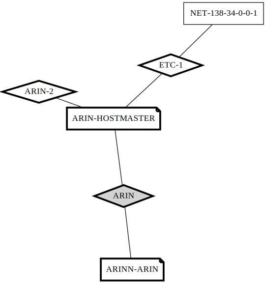

MapResources Examples¶
Note that the following examples are for illustration purposes only. The resources listed below were found at a particular instance in time. For a more accurate representation of organizational resources the ARIN whois database should be queried directly.
1. Initiate search from an Organizational handle¶
Suppose we wish to obtain the graph of resources assigned ARIN. We know that one of the organizational handles for ARIN is ‘ARIN’, thus we can use this handle as one of our starting points:
$ python map_whois.py -X -o ARIN -g ARIN.svg
The -o option specifies the organizational handle of ‘ARIN’, while the -g option specifies the name of the file for the resource graph.
The -X option in the above command specifies that no caching is to be performed during query lookup.
If the -H option were used instead of the -X option, the script would use a hash store as the caching store instead. The hash data store allows scripts that wrap around the map_resources module to make use of cached values in subsequent calls to the graph generation routine. However, the hash data is still non-persistent. In order to use a persistent data store the above script should be called with the ‘-D host:port’ option. The -D option is the default.
The graph produced by the above command is shown below:
{kind=link}
We note the following:
- Only a single network block is shown. For ARIN, this is likely an incomplete set.
- The ARIN block is grayed out. This indicates that the number of resource dependencies from the ARIN block exceeded some threshold. The hover text that appears over the grayed block indicates that the number of resources for http://whois.arin.net/rest/org/ARIN/nets is 51, which is clearly above our default threshold of 25.
2. Initiate search from an Organizational handle, with a larger threshold¶
If we re-run the above command (this time, with a local DB store) with the -t 51 option, we get a different output:
$ python map_whois.py -o ARIN -t 51 -g ARIN.svg
As can be seen from the figure, a much larger set of resources are returned now.
3. Initiate search from multiple handles¶
A search for ‘ARIN’ on http://whois.arin.net indicates that two ASNs, AS10745 and AS394018, not depicted in the figure above are also assigned to ARIN. In order to include these resources in our resource graph, we can renew the search using multiple starting handles. Note that since we make use of a local persistant data store, resources that were fetched previously are not re-queried.
The command that we use and the image that is produced as a result are as follows:
$ python map_whois.py -o ARIN -a AS10745 -a AS394018 \
-t 51 -g ARIN.svg
The figure shows two different clusters of resources. This explains why the combined set of resources could not be found with the ‘ARIN’ handle alone.
4. Comparison against Route Views¶
The -R option enables map_whois.py to find new resource handles after a comparison with Route Views data.
NOTE: The Route Views data has to be stored into a database first.
New resources are identified in two ways:
- ASNs that were previously unknown, but which originated known prefixes.
- Prefixes that were previously unknown, but which are originated by known ASNs.
In addition, this option also checks whether any known prefixes were originated by an ASN other than the one listed in ARIN’s Whois database.
For example, given an SQLite file ‘rib.sqlite’ containing the Route Views RIB data, the following command lists a number of ‘unknown’ ASNs:
$ python map_whois.py -o ARIN -a AS10745 -a AS394018 \
-t 51 -g ARIN.svg -R rib.sqlite
However most (if not all) such ASNs correspond to different clusters of resources that belong to other organizations that are recipients of resource assignments from ARIN. If any of these clusters are not re-assignments, resources within such clusters can be used as additional starting points in the resource graph construction process.
5. Generation of a report¶
Determining a complete list of starting handles is an iterative process. Once a list of handles has been obtained, a report listing out the different resources found as part of the mapping operation can be generated using the -r option to map_whois:
$ python map_whois.py -o ARIN -a AS10745 -a AS394018 \
-t 51 -g ARIN.svg -r report.html
Note that the report formating is highly primitive and is a work in progress.